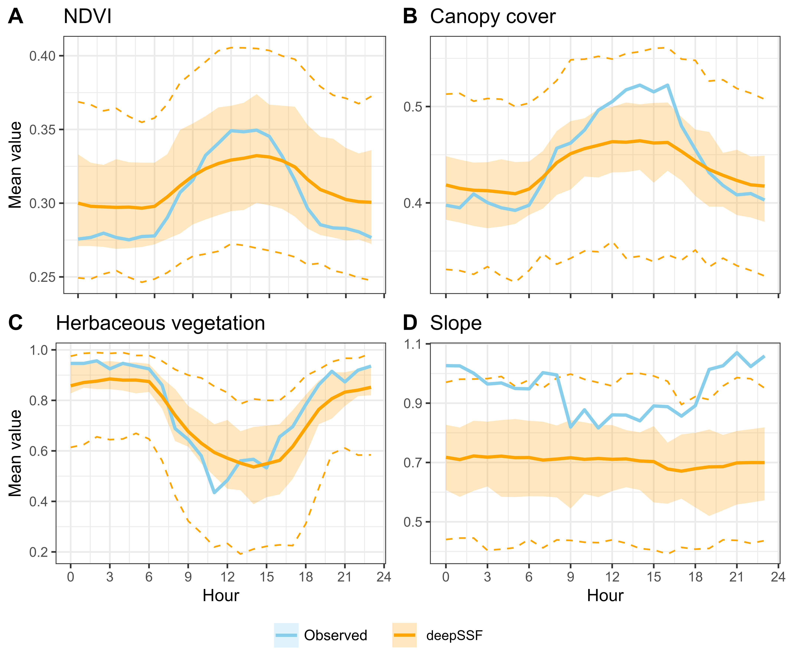
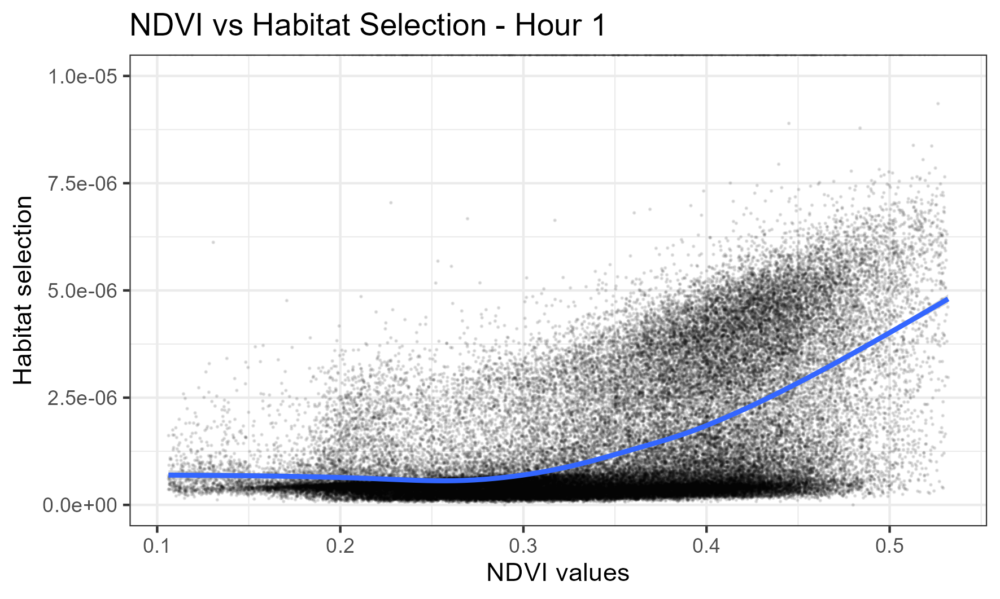
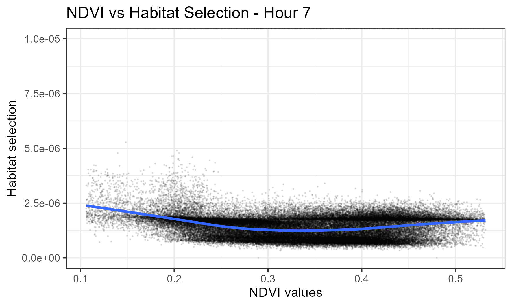
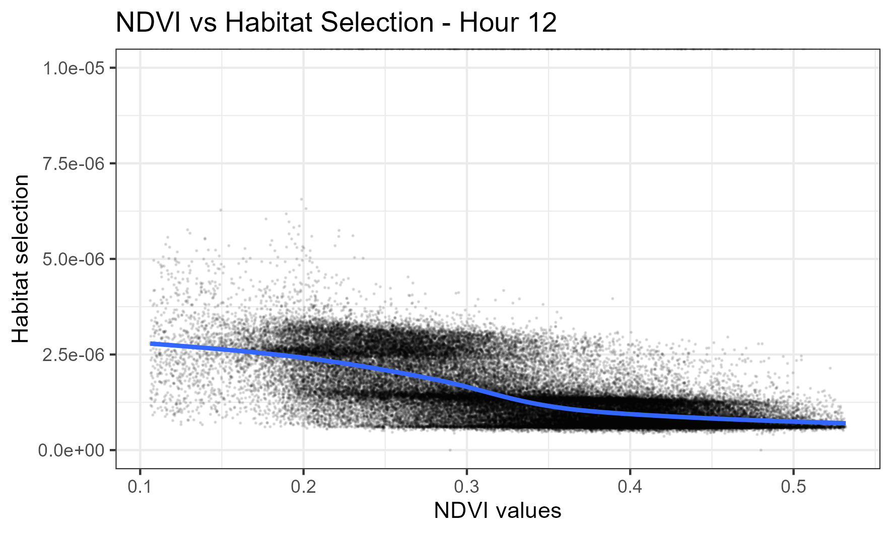
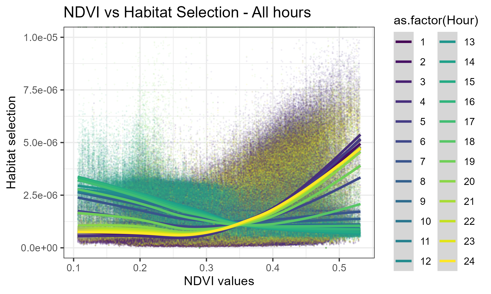
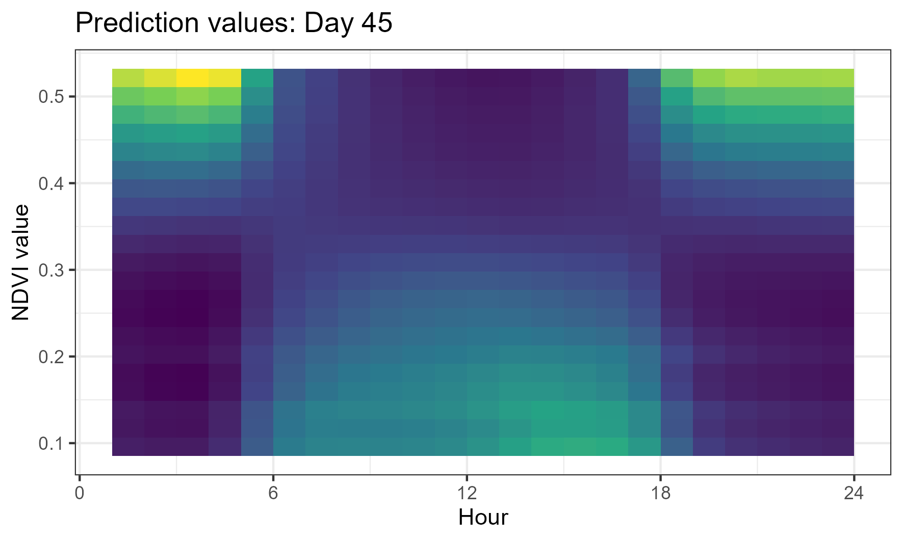
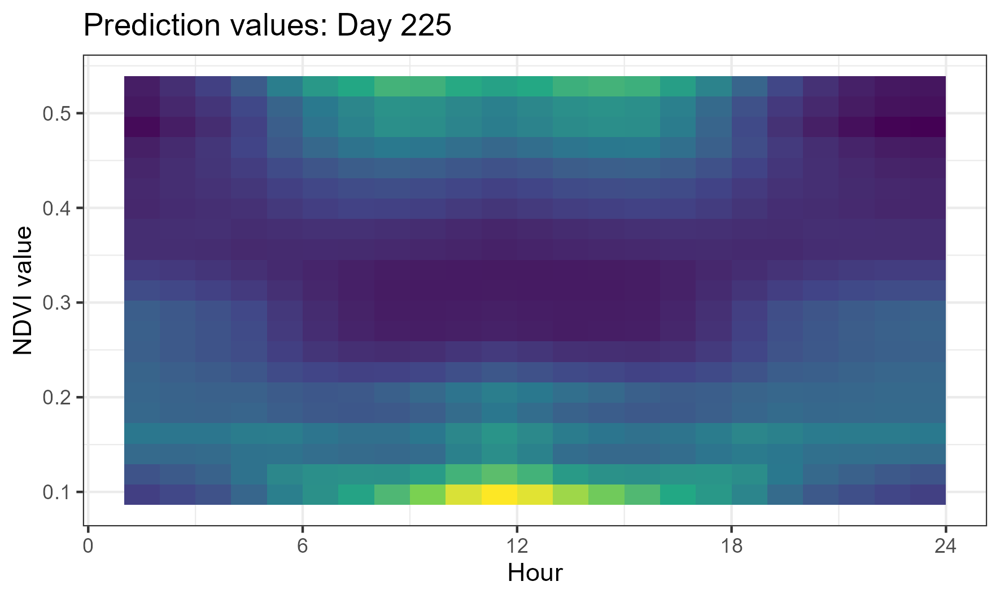

Inference
![]()
Here we use the term ‘inference’ to mean that we are inferring aspects of the ‘true’ underlying process (e.g. habitat selection), by interpreting what the model has learned.
From step selection functions (SSFs) we can understand what the model has learned, and the relationship of the animal to the spatial covariates, by interpreting the coefficients. Because the deepSSF model has many more parameters, and they contribute in complicated ways to the predictions, we cannot interpret the parameters in the same way.
However, the model does have some ‘explainability’, which means that we can assess the models outputs and intermediate outputs to assess what it learned, which can be used to guide model development and refinement, and can even help us to understand our species’ relationship to the environment, and how that changes through time.
Assessing the simulated trajectories
Now that we have generated trajectories in the simulations scripts, we can check how well they capture different aspects of the observed data. This includes looking at the distribution of step lengths and turning angles, as well as comparing the observed and simulated trajectories in terms of the environmental covariates. We could also further summarise the trajectories using path-level summaries following a similar approach.
Movement distributions against the observed data
We can see that we match the observed movement distirbutions quite well, even when the step length distribution is log-transformed to reveal the bimodal pattern in step lengths.

Habitat selection summaries against the observed data
If we take the average values of the covariates for each hour of the day, we see that they capture the temporal dynamics present in the habitat selection of the observed data.

Landscape scale habitat selection
Just by looking at the habitat selection predictions generated by the model, we can start to see patterns that make sense to us. If we look at the figure below, we can see in Panel A that there is higher selection at that hour of the day for the higher values of NDVI and woody vegetation, and for low slope values. In Panel B there is a similar effect, although there also appears to be some edge effect at the edge of the forested patch. In Panel C, there is selection for the intermediate canopy cover values near the river feature, but also a region of even higher probability towards the top right, which correlates with a low-lying area that may be flooded.
Obviously we can’t do this for every step (although plotting the habitat selection surfaces across a broader extent for the different hours of the day, such as in the Predictions tab can help with this), so it would be helpful to have a way to quantify the overall relationship.
The way that we have approached this is by taking the landscape scale habitat selection surfaces (as shown in the Predictions tab), and correlating values of the spatial covariates with the habitat selection probabilities.
One hour at a time
If we consider NDVI for instance, we can select a day of the year and one of the hours, and plot the values of NDVI against the habitat selection probabilities for those same cells. We think this approximates something like the marginal representation of the habitat selection that is described by NDVI, and shows what is being selected for or against.
If we look at the 45th day of the year (yday 45 = mid-February, in wet season) and 1am, we see there are higher probability values for higher NDVI, suggesting that this is what this buffalo was selecting for:

For the same day but at 7am, which is during the high movement period of water buffalo, there is fairly uniform selection across the NDVI values, suggesting that they are agnostic to NDVI at this time:

At midday, this buffalo now shows higher selection for lower values of NDVI, suggested that this may be related to foraging (e.g. more open, grassier areas):

All hours
We can also look at all of the hours (for yday = 45) together, which reveals the dynamic and rhythmic trend of selection for NDVI throughout the day, with selection for lower values in the middle hours and higher selection during the early morning and night hours:

Mean value across all hours
However, the plot above is fairly messy, so instead we can use the stat_summary_2d function to create a 2D histogram of the data. This will allow us to see the average habitat selection values for different NDVI values at different times of the day.
What we are seeing is the mean habitat selection probability value for different NDVI values at different times of the day. Higher values indicate a higher mean probability of selecting NDVI values in that range:

This selection surface reflects the plots above, with a pattern of selection for lower NDVI values during the middle hours of the day, and high values in the early morning and evening. This suggests that buffalo are selecting for less vegetated areas during the middle of the day, and more vegetated areas in the early morning and night.
We can then calculate the same for a different day of the year, such as day 225 (mid-August, dry season):

Here we see quite a different response, where there is some bimodal selection during the day, with higher selection probabilities for both low and high NDVI values. This may indicate that there are some features described by low or high values of NDVI that are important for buffalo habitat selection during this time of year, or may just indicate that the selection is more variable in the dry season.
These selection surfaces are also similar to those presented by Forrest et al. (2024), which was acheived by fitting temporal dynamics and quadratic terms to the NDVI covariate. However, this was only fitted to one season of data at a time, whereas the deepSSF model can be fitted with multiscale temporal dynamics.
Revealing what the model has learned about the data can help us to understand the movement and habitat selection of our study species, and if we were to include other processes such as memory or social dynamics, we could interrogate the model to also understand these.
Scripts
We have a script for assessing the trajectories against the observed data, and a script for correlating habitat selection probabilities with values of the spatial covariates. As only the derived covariates (NDVI, canopy cover, herbaceous vegetation and slope) have values that are meaningful to interpret on their own (in contrast to the values of the Sentinel-2 bands), we only provide a script for assessing the landscape scale habitat selection with the derived covariates.